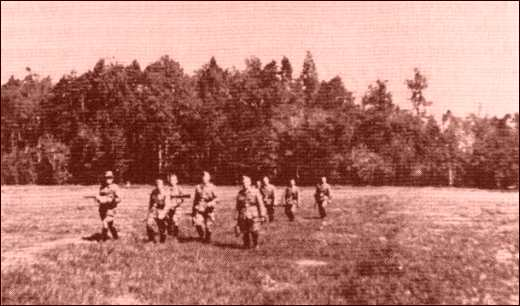
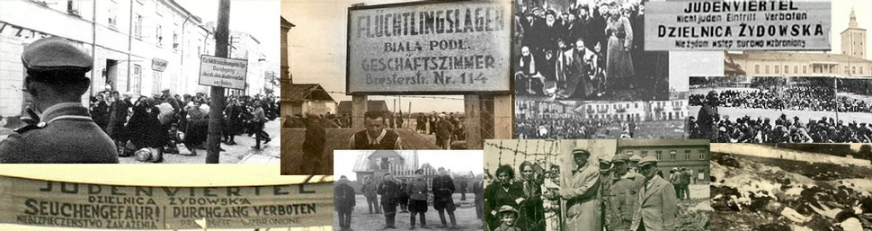
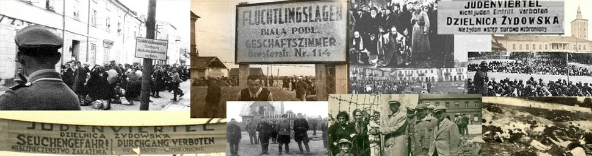

Pictures from our recent events and outreach
Na początku 1942 r. rozpoczęto w dystrykcie lubelskim przygotowania do masowej zagłady ludności żydowskiej. W odróżnieniu od innych dystryktów, przeprowadzono tu tylko częściową koncentrację Żydów, toteż dla ułatwienia deportacji do obozów zagłady, gromadzono ich w wyznaczonych miejscowościach leżących w pobliżu linii kolejowych. Proces ten trwał przez cały 1942 r. i objął wszystkie powiaty.[1]
W styczniu 1942 r. w powiecie Biała Podlaska przesiedlono 149 Żydów ze wsi Dołhobrody, Holeszowa i Hanny do dzielnicy żydowskiej w Sławatyczach, oraz 138 Żydów z Rozwadówki, Motwicy i Czeputki do Wisznic. W czerwcu 1942 r. Żydów z Podedwórza, Rossosza i Sławatycz skierowano do getta w Łomazach. W powiecie Radzyń Podlaski zgromadzono Żydów w Łukowie i Międzyrzecu Podlaskim.[2]
Od marca 1942 r. rozpoczęto wywożenie Żydów z dystryktu lubelskiego do obozów natychmiastowej zagłady. Deportacjami kierował bezpośrednio szef sztabu O. Globocnika SS-
Zgodnie ze znanymi dotychczas historycznymi danymi oraz opinią pamiętających świadków tamtych wydarzeń, w okresie od lata 1942 r. do zimy 1944 r., na terytorium województwa bialskopodlaskiego wspomniany niemiecki batalion policyjny 101 aktywnie uczestniczył nie tylko w akcjach deportacyjnych ale także i w eksterminacji znajdujących się tam Żydów.[6]
W przeciągu niespełna roku kilkakrotnie zmieniał on miejsca swojego postoju. W czerwcu 1942 r. przemieścił się z Biłgoraja do Radzynia Podlaskiego, w październiku do Łukowa aby w kwietniu 1943 r. ponownie przybyć do Radzynia Podlaskiego i zaraz potem do Międzyrzeca Podlaskiego. Znajdując się w wyżej wymienionych miastach wykonywał różnego rodzaju zadania mające na celu wyniszczenie ludności żydowskiej danego terytorium.[7]
Szlak pokonywany przez policyjny batalion 101, prześledzić można na umieszczonej niżej mapie. Oprócz wymienionych miejscowości na mapie zobaczyć można także miejsca organizowanych w czasie okupacji hitlerowskiej gett i obozów masowej zagłady w całym dystrykcie lubelskim.
Dystrykt lubelski (1942 r.) [8]
Dowódcą batalionu był major Wilhelm Trapp. Batalion liczył około 500 osób i byl podzielony na trzy kompanie zaś każda z nich była podzielona na plutony. Batalion był lekko uzbrojony – na cały przypadały tylko cztery pistolety maszynowe, pozostali mieli karabiny. Posiadał swój transport włącznie z samochodami i rowerami.[9] Żołnierze służący w batalionie mieli średnio po 36,5 lat. Tylko 42 żołnierzy było poniżej 30 roku życia zaś 9 było nieco starszych – powyżej 50 roku życia. W zależności od pochodzenia społecznego, żołnierzy batalionu można było podzielić na następujące grupy społeczne, (patrz tabela nr 2).
Pochodzenie społeczne żołnierzy batalionu 101. Tabela nr 2.
Źródło: D. J. Goldhagen, Hitler’s Willing…, op. cit., s. 206-
Z 550 żołnierzy batalionu 179 było członkami Partii Nacjonalistycznej i stanowili oni 32.5 procent a 21 osób było członkami SS – około 3.8 procent. Biorąc pod uwagę wyżej wymienione dane można powiedzieć, że większość policjantów nie była członkami SS i Partii Nacjonalistycznej, a jedynie zwykłymi Niemcami w wieku 36 lat, rezerwistami pochodzącymi z niższej i wyższej grupy społecznej.[10]
20 czerwca 1942 r. batalion policyjny 101 uzupełniony posiłkami przybyłych wprost z Niemiec żołnierzy, otrzymał rozkaz przystąpienia do wykonania akcji likwidacyjnych w dystrykcie lubelskim. Liczył on wtedy 11 oficerów, 5 pracowników administracji i 486 żołnierzy (policjantów). Przybyli oni szybko do Biłgoraja, a tam w pobliskim Józefowie w lipcu 1942 r. wykonali swoją pierwszą dużą operację eksterminacyjną rozstrzeliwując 1500 Żydów. Szczególnym okrucieństwem i bezwzględnością wsławił się tam kapitan Julius Wohllauf. Pozwolił on nawet swojej żonie Verze tak jak i jego “kompan” – porucznik Paul Brand swojej, uczestniczyć podczas wymyślnych tortur jakie zadawali policjanci z batalionu, Żydom. Następnie batalion uczestniczył w nielicznych operacjach wyszukiwania i dowożenia Żydów z małych miejscowości i wsi w miejsca ich większej koncentracji w rejonie Biłgoraja i Zamościa.[11]
Kolejną dużą akcją eksterminacyjną, była operacja przeprowadzona w sierpniu 1942 r. na terenie ówczesnego powiatu Biała Podlaska, w rejonie wsi Łomazy. Rozkaz jej wykonania otrzymała druga kompania batalionu. W przeddzień rozpoczęcia tej jakże okrutnej operacji, dnia 17 sierpnia, dowódca podporucznik Gnade zebrał swoich dowódców plutonów w miejscu ich kwaterunku tzn. w Białej Podlaskiej. Chwilę potem wydał rozkaz stawienia się wszystkim w dniu następnym o godzinie 4-
Łomazy w owym czasie liczyły 3000 ludzi z pośród których więcej niż połowę stanowili Żydzi. Z grupy 1600-
Porucznik Gnade w trakcie przygotowań do operacji oznajmił, że rozstrzelaniem Żydów w Łomazach zajmować się będzie specjalny oddział zwany ”Trawnikis” znany czasami także i pod nazwą ”Hiwis”. Składał się on głównie z Ukraińców zaś Niemcy mieli jedynie koordynować wykonywaniem operacji a także nimi kierować.[14]
18 sierpnia 1942 r. policjanci z batalionu 101 zebrali się w wyznaczonym miejscu. Tam potrzebowali niespełna dwóch godzin żeby zebrać wszystkich Żydów w getcie a następnie doprowadzić ich na boisko szkolne. Ci, którzy stawiali opór, zgodnie z rozkazem porucznika Gnade rozstrzeliwani byli na miejscu. Bardzo dokładnie podliczono ilość domów żydowskich, a następnie je oznaczono. Policjanci z plutonów podzieleni byli na dwu i trzyosobowe grupy poszukiwawcze, których zadaniem było przeszukiwanie wszystkich domów łącznie z poddaszem i piwnicą. Jeden z policjantów wykonujących polecenie, nazwany świadkiem H. w swoim sektorze składającym się z kilku domów podliczył 15 zastrzelonych Żydów. Zapewne byli to ci, którzy stawili opór hitlerowskim żandarmom, a być może osoby starsze, zniedołężniałe lub chore. Po upływie dwóch godzin przerywanych wystrzałami getto było już całkowicie oczyszczone, a żydowscy jego mieszkańcy zgodnie z rozkazem zagnani zostali na plac nieopodal szkoły podstawowej .[15]
Zebrani tam pełni obaw i niepokoju czekali na dalszy bieg wydarzeń. Niestety nie prędko im dane było się o tym przekonać. Na boisku szkolnym więźniowie rozdzieleni zostali na 2 grupy, oddzielnie kobiety z malutkimi dziećmi i oddzielnie mężczyźni. Po przegrupowaniu rozsadzono ich w określonej od siebie odległości. Nikt nie miał prawa się poruszyć, każdy bez wyjątku musiał siedzieć. Tak trzymani byli jeszcze przez kilka długich godzin, czekając na jedną z operacji batalionu, będącą prawdopodobnie kroplą w morzu dokonanego przez nich zła.[16] Przedstawione niżej fotografie dają obraz tamtych dni i tamtych wydarzeń.
Policjanci z batalionu 101 pilnują zgromadzone na boisku szkolnym dwie grupy Żydów -
Żydzi zebrani na boisku szkolnym. Widok od strony wsi.[18]
Na odwrocie ostatniego zdjęcia, wykonujący je fotograf, napisał: “skazani Żydzi / Lomartzie 18 sierpnia 42 / 1600”. Ostatnia liczba oznacza oczywiście ilość rozstrzelanych w tym dniu Żydów, a Lomartzie zniemczoną nazwę Łomaz.
Odwrotna strona fotografii. Skazani Żydzi. Łomazy 18 sierpnia 1942 r.[19]
Z pośród zgromadzonych na boisku szkolnym Żydów pierwszy pluton wybrał grupę od 50 do 60 mężczyzn, wyglądających na dostatecznie silnych i zdrowych. W chwilę potem zaopatrzono ich w łopaty i wyprowadzono do lasu znajdującego się kilometr dalej. Tam otrzymali oni zadanie polegające na wykopaniu dołu pod zaplanowaną wcześniej egzekucję.[20]
Przedstawiona niżej fotografia pokazuje stojących po kolana w wodzie Żydów w trakcie kopania własnej mogiły. Na odwrocie tego zdjęcia wykonujący je fotograf umieścił identyczny napis: „Żydzi kopiący masową mogiłę / Lomartczy 18 sierpnia 1942 / 1600”.
Żydzi kopią masową mogiłę na peryferiach Łomaz.[21]
W tym samym czasie na boisko przyszkolne przybył spóźniony oddział „Hiwis” składający się z 40-
Po skończonym śniadaniu na boisko wezwano sołtysa wsi, któremu rozkazano przynieść liny a następnie opasano nimi kolumny mężczyzn żydowskich w grupach po 6-
Kiedy już kolumna więźniów dotarła na miejsce egzekucji, policjanci ponownie uformowali oddzielną grupę mężczyzn i kobiet a następnie odwiedli w różnych kierunkach nie dalej jednak niż 50 metrów od ich przyszłej mogiły. Kobietom rozkazano zdjąć odzież wierzchnią a mężczyznom rozebrać się do naga. Przeszukując ubrania odebrano wszelkie wartościowe przedmioty.[24]
Gotowy do egzekucji pluton uszeregowano między dołem a przerażonymi ludzmi. Chwilę potem wybrane 15 – 20 osobowe grupy Żydów, brutalnie popędzane i bite kolbami karabinów goniono w stronę dolu. Miejsce egzekucji przedstawiało straszny widok. Rów miał około 1,5 – 2 jardy głębokosci, 30 jardów szerokości i 55 jardów długości a z jednej jego strony znajdowało się pochyłe wejście. Poszczególne grupy Żydów otrzymywały rozkaz wejścia na dno dołu, nachylenia się a następnie położenia się twarzą do ziemi. Na dnie rowu czekali na nich już Ukraińcy oraz niemieccy policjanci z grupy „Hiwis” Zadanie ich polegało na strzelaniu w tył głowy leżących wewnątrz rowu. Każda kolejna grupa Żydów zmuszona była kłaść się na trupy już rozstrzelanych w dokładnie takiej samej pozycji głowa przy głowie. Wykorzystując tak przerażającą metodę rów stopniowo się zapełnial ofiarami.[25]
Z czasem podporucznik Gnade najwyraźniej żądny okrutnych wrażeń, wybrał grupę 20 – 25 starszych Żydów prawdopodobnie rabinów, co można było przypuszczać po ich długich brodach, w celu przeprowadzenia wyjątkowo wyszukanej egzekucji. Rozkazał wszystkim rozebrać się do naga i stanąć gromadą w pobliżu wykopanego „grobowca”. Następnie polecił sierżantom pójść do lasu i przynieść potężne kije, które miały służyc do bicia nieszczęsnych starców. Rozkaz brzmiał: bić tak aby nie zabić, a wykonywany był nad wyraz skrupulatnie przez nie przestających ciągle pić alkohol policjantów. Tak skatowanych nie pokazujących żadnych oznak życia, na wszelki wypadek jeszcze rozstrzelano.[26]
Policjanci z grupy „Hiwis” w trakcie mordowania ciągle pili, dlatego też nie zawsze, nawet z bliskiej odległości strzelali celnie. Widok z czasem stawał się koszmarem wziętym z najokrutniejszych horrorów. Ranni Żydzi w nieludzkich mękach czekali jak wybawienia swojej śmierci. Mogiła wykopana była poniżej wód gruntowych, dlatego też woda stopniowo podnosząc swój poziom mieszała się z ludzką krwią, zalewając ciała tych, którzy już nie żyli i tych, którzy na śmierć wciąż czekali. Tymczasem oprawcy coraz bardziej pijani, stojąc po kolana w błocie zmieszanym z ludzką krwią, bestialsko wykonywali zadanie.[27]
Większość Niemców z odległości 30 jardów przyglądała się tylko toczącemu się horrorowi, starając się nie uczestniczyć w nim. Z czasem jednak pijani „Hiwis”, nie panujący nad bronią palną przerażali Niemców, którzy zaczęli obawiać się już tylko o swoje życie. Dlatego też porucznik Gnade dwóm swoim podwładnym wydal rozkaz zastąpienia ukraińskiej policji niemiecką. Ta obrała nieco inną taktykę mordowania. Stojąc naprzeciwko rowu w grupach nie większych niz 8 – 10 ludzi strzelali ogniem krzyżowym do znajdujących się w dole Żydów. Co 5 – 6 egzekucji, czyli około co pól godziny zamieniano grupy policjantów, tak aby każdy członek plutonu mógł uczestniczyć w zabijaniu.[28]
Niemiecka policja rozstrzeliwała tak przez kolejne dwie godziny a po upływie czasu niektórzy Ukraińcy z „Hiwis” zdążywszy wytrzeźwieć, zastępowali ją robiac to przez następną godzinę. Kilkugodzinna egzekucja spowodowała przepełnienie rowu do tego stopnia, że powstał problem z zakopaniem zwłok, które przykryć mogła cienka warstwa piasku. Wielu Żydów zakopano niestety żywcem, o czy świadczyła unosząca się lekko nad ciałami warstwa ziemi. Tego dnia zabito podczas niespełna kilku godzin 1700 mężczyzn, kobiet, starców i dzieci żydowskich. Ci którzy tego dnia ocaleli to garstka 12 Żydów, zmuszona do grzebania zwłok swoich bliskich.[29]
Na przełomie 1942-
Operacje batalionu 101. Tabela nr 3.
Źródło: D. J. Goldhagen, Hitler’s Willing…, op. cit., s. 232-
Jesienią 1942 r. batalion policyjny 101 tak jak i inne niemieckie siły zbrojne otrzymał rozkaz tzw. Schiessbefehl, aby strzelać do każdego napotkanego Żyda znajdującego się poza terenem getta. Po zdobyciu informacji dotyczącej miejsca kryjówki Żydów, nie rzadko od polskich informatorów, szczegółowo wyliczali rozmiary możliwej operacji, śledzili ich a znalezionych zabijali na miejscu. Misje pod hasłem: “znaleźć i zabić“, które rozpoczęły się jesienią 1942 r. i trwały cały następny rok, oraz likwidacje żydowskich gett stały się główną formą działalności batalionu 101 na terenie całego dystryktu lubelskiego.[30]

Porucznik Gnade i jego żołnierze poszukują Żydów.[31]
25 sierpnia 1942 r. w Międzyrzecu Podlaskim przeprowadzono kolejną akcję eksterminacyjną z udziałem batalionu policyjnego 101. Celem jej była deportacja 11.000 Żydów, głównie mieszkańców miasta, do obozu masowej zagłady w Treblince. W zorganizowanej obławie, w trakcie której wyrzucano z domów a następnie zaganiano na rynek wszystkich mieszkańców getta, członkowie batalionu wykazali się nieprawdopodobną wręcz brutalnością, wykonując narzucone im rozkazy rzetelnie i szybko, świadomie podporządkowując się zbrodniczemu niemieckiemu mechanizmowi. Pod wpływem psychicznego nacisku grupy, w której się znaleźli, konformizm skłaniał ich do działania, blokując wszelkie opory. Żaden z policjantów nie chciał zostać okrzykniętym przydomkiem „przyjacielem Żyda”, uważanym za najgorszą obelgę. Mając zarazem poczuciem cywilizacyjnej, politycznej i rasowej wyższości uczestniczyli w „ostatecznym rozwiązaniu” kwestii żydowskiej.[32]
Podczas obławy zorganizowanej w międzyrzeckim getcie zabito około 1000 osób w tym głównie osoby starsze i dzieci. Żydzi, którzy dotarli na rynek zmuszani zostali pod groźbą zabicia kucnąć i w takiej pozycji przesiedzieć pod rozpalonym słońcem niebem kilka nie kończących się godzin. Wielu z nich traciło przytomność, nogi odmawiały posłuszeństwa, drętwiały. Ci, którzy próbowali wstać bądź się poruszyć zabijani byli na miejscu. Takim sposobem Niemcy zabili wiele dzieci, nie będących w stanie usiedzieć stale w tej samej pozycji.[33] Niżej przedstawiona fotografia ilustruje zebranych Żydów tuż przed deportacją na Majdanek z 25 sierpnia 1942 r.
Batalion policyjny 101 pilnujący Żydów przed wysyłką do obozu koncentracyjnego na Majdanek.[34]
Policjanci z „Hiwis” (oddział policji ukraińskiej) i Niemcy z międzyrzeckiej żandarmerii z niekłamaną przyjemnością chłostali bezbronnych więźniów. Żony niektórych niemieckich oficerów, jak wspomniana Vera, żona dowodzącego akcją kapitana Juliusa Wohlauf, przyglądała się jak jej mąż wydaje rozkazy. Sama trzymała w ręku pejcz – symbol władzy i przebywała na rynku aż do zakończenia akcji. Nie przeszkadzał jej skwar i krwawe obrazy, co budziło zdziwienie kolegów jej męża zwłaszcza, że była w ciąży. Państwo Wohlauf przyjechali do Międzyrzeca tuż po swoim ślubie, aby w tej makabrycznej scenerii spędzić swój miesiąc miodowy. Podobnie żony innych stacjonujących tam Niemców jak żona porucznika Paula Branda oraz niemieckie pielęgniarki Czerwonego Krzyża wystawiały się na niepotrzebne emocje przyglądając się rozgrywającej masakrze. Przerażającym jest fakt, że ani policjanci z batalionu nie mieli nic przeciwko ujawnieniu swego morderczego dorobku, ani ich żony nie miały niczego przeciwko temu, czym na co dzień zajmują się ich mężowie.[35]
Kapitan Julius Wohlauf.[36]
Żydzi siedzący na rynku płakali i krzyczeli co wyprowadzało z równowagi pilnujących ich Niemców. Hałaśliwych policjanci z „Hiwis” zmuszali do milczenia bijąc kolbami karabinów gdzie popadnie. Żandarmeria zaopatrzona w baty zakończone węzłami nie ustępowała w żarliwości oddziałom ukraińskiej policji. Chodzili oni pomiędzy rzędami siedzących Żydów i z niekłamaną satysfakcją dotkliwie ich bili. Z czasem okrutny charakter Niemców i zwykły sadyzm, stawał się swego rodzaju sportem, jak twierdza nieliczni, ocaleli świadkowie tego wydarzenia. Z nudów, dla zabicia czasu niektórzy wymyślali grę polegającą na rzucaniu jabłka w tłum siedzących Żydów. Ten, którego jabłko trafilo, musiał umrzeć. Podobna zabawa miała miejsce na dworcu kolejowym, z ta małą różnicą, że jabłka zastąpiły puste butelki po winie, które wcześniej wypito. Odpryskujące odłamki szkła ranily siedzących. Okaleczonych wyciągano z tłumu, bito a następnie rozstrzeliwano. Po skończonej zabawie martwych wraz z żywymi ładowano do tych samych wagonów i wywożono do Treblinki.[37] Kolejna fotografia utrwaliła końcowy moment wysyłki żydowskich kobiet i dzieci do obozu masowej zagłady w Treblince, 25 sierpnia 1942 r.
Wywóz żydowskich kobiet i dzieci do Treblinki.[38]
Kulminacją morderczej działalności policyjnego batalionu 101 były operacje przeprowadzone już poza granicami dzisiejszego województwa bialskopodlaskiego w Poniatowej i na Majdanku w listopadzie 1943 r. Były one, zresztą jak i wszystkie poprzednie, częścią ogromnej “Operation Erntefest”, zwanej świętem urodzaju, podczas, której zabito ponad 30 000 ludzi. Jak potwierdzaja fakty, policjanci z batalionu 101 uczestnicząc w eksterminacyjnych operacjach, sami albo przy pomocy innych wojsk rozstrzelali lub deportowali do obozów śmierci więcej niż 80 000 Żydów.[39]
[1] J. Kiełboń, Migracje…, op. cit., s. 165
[2] Ibid.
[3] Ibid., s. 166
[4] Ibid., s. 156, Adam Krzemiński, Mordercy z gorliwości, Polityka nr 21 (2038), 25 maja 1996, s. 73.
[5] A. Krzemiński, Mordercy z gorliwości…, po. cit.
[6] Daniel Jonah Goldhagen, Hitler’s Willing Executioners, Ordinary Germans and Holocaust, New York 1997, s. 204.
[7] Ibid.
[8] ibid., s. 205.
[9] Ibid.
[10] Ibid., s. 208
[11] ibid., s. 211, patrz zdjęcie Very Wohlauf, s. 243, A. Krzemiński, Mordercy z gorliwości…, op. cit., s. 73
[12] D. J. Goldhagen, Hitler’s Willing…, op. cit., s. 223.
[13] ibid., J. Doroszuk, Zagłada obywateli…, op. cit., s. 135.
[14] ibid., s. 224.
[15] ibid., s. 223.
[16] Ibid., s. 224
[17] ibid., s. 224.
[18] ibid., s. 225
[19] Ibid., s. 226.
[20] Ibid.
[21] ibid.
[22] ibid., s. 227.
[23] Ibid., s. 227, J. Doroszuk, Zagłada obywateli…, op. cit., s. 134.
[24] D. J. Goldhagen, Hitler’s Willing…, op. cit.
[25] ibid. , s. 228.
[26] ibid.
[27] ibid., s. 228-
[28] ibid. s. 229.
[29] ibid., s. 230.
[30] ibid., s.234.
[31] D. J. Goldhagen, Hitler’s Willing…, op. cit., s. 236.
[32] ibid. s. 241. A. Krzemiński, Mordercy z gorliwości…, op. cit., s. 72, 74.
[33] D. J. Goldhagen, Hitler’s Willing…, op. cit., s. 255-
[34] ibid., s. 257.
[35] A. Krzemiński, Mordercy…, op. cit., s. 73, D. J. Goldhagen, Hitler’s Willing…, op. cit., s. 242-
[36] D. J. Goldhagen, Hitler’s Willing…, op. cit., s. 243.
[37] Ibid., s. 257
[38] Ibid., s. 258.
[39] Ibid., s. 233.
Działania eksterminacyjne batalionu policyjnego 101

| Grupa społeczna | |||
| Podgrupa zawodowa |
Procent od całości |
||
|
Niemcy |
Batalion policyjny 101 |
||
|
% |
(ilość) |
% |
|
| Niższa | |||
| 1. Robotnicy niewykwalifikowani |
37.3 |
64 |
22.0 |
| 2. Robotnicy wykwalifikowani |
17.3 |
38 |
13.1 |
| Razem |
54.6 |
102 |
35.1 |
| Średnia | |||
| 3. Rzemieślnicy |
9.6 |
22 |
7.6 |
| 4. Fachowcy bez wyższego wykształcenia |
1.8 |
9 |
3.1 |
| 5.Pracownicy niższego i wyższego szczebla |
12.4 |
66 |
22.7 |
| 6. Pracownicy obsługi niższego i wyższego szczebla |
5.2 |
59 |
20.3 |
| 7. Kupcy |
6.0 |
22 |
7.6 |
| 8. Rolnicy |
7.7 |
2 |
0.7 |
| Razem |
42.6 |
180 |
61.9 |
| Wyższa (Elita) | |||
| 9. Menażerowie |
1.0 |
1 |
0.3 |
| 10. Pracownicy obsługi wyższego szczebla |
1.0 |
1 |
0.3 |
| 11. Fachowcy z wyższym wykształceniem |
1.0 |
1 |
0.3 |
| 12. Studenci uniwersytetów |
0.5 |
0 |
0 |
| 13. Tłumacze |
0.3 |
6 |
2.1 |
| Razem |
2.8 |
9 |
3.1 |
| Wszystkie grupy razem |
100.0 |
291 |
100.0 |
|
miejscowość |
Data |
Ofiary |
Rodzaj operacji |
| Łomazy | sierpień 1942 | 1,700 Żydów | Rozstrzelani |
| Parczew | sierpień 1942 | 5,000 Żydów | Deportowani do obozów |
| Międzyrzec | sierpień 1942 | 11,000 Żydów | Deportowani do obozów |
| Radzyń | Październik 1942 | 2,000 Żydów | Deportowani do obozów |
| Parczew | Październik 1942 | 100 Żydów | Rozstrzelani |
| Biała Podlaska i powiat bialskopodlaski | Październik i listopad 1942 | 10,800 Żydów | Deportowani do Międzyrzeca |
| Komarówka | Październik i listopad 1942 | 600 Żydów | Deportowani do Międzyrzeca |
| Wohyń | Październik i listopad 1942 | 800 Żydów | Deportowani do Międzyrzeca |
| Czemierniki | Październik i listopad 1942 | 1,000 Żydów | Deportowani do Międzyrzeca |
| Radzyń | Październik i listopad 1942 | 2,000 Żydów | Deportowani do Międzyrzeca |
| Międzyrzec | Październik i listopad 1942 | 15,200 Żydów | Deportowani do obozów |
| Międzyrzec | maj 1943 | 3,000 Żydów | Deportowani do obozów |
 
